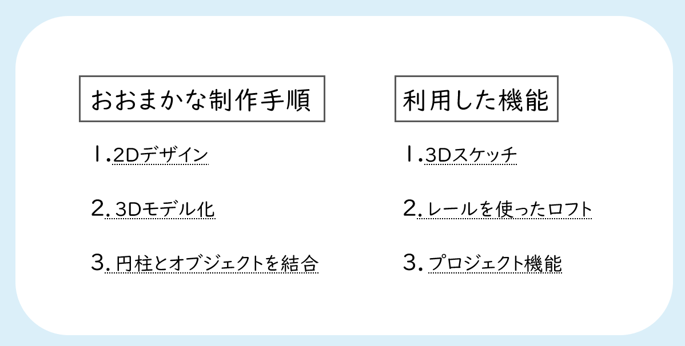
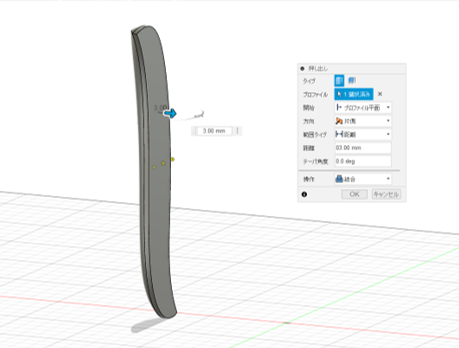
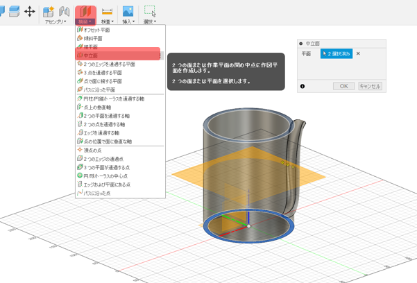

【ODP】ランプシェードvol.2
2021.6.7
まず初めに、今回大変お世話になった動画
【Fusion360中級 #2】色んな方法を駆使！もこもこの指輪作り
URL: https://www.youtube.com/watch?v=nQixg8NXlQg&t=571s
この記事の別のデザインのモノです。

1.2Dデザイン
・直径150mmの円柱を作ります
・接平面で円柱の側面に平面を作る
・作成した平面でスケッチを作成します。
・円柱の高さに合わせた長方形を作り、円柱の真ん中あたりから右へと直線を引きます。長方形の大きさ、線の長さは任意で。
・フィット点スプラインを使って図のようなスケッチを作成。
・先ほど書いた線とスケッチを一致させるように！
2.3Dモデル化
・スケッチと垂直になるように任意の大きさで楕円を描く
・拘束の「一致」で楕円の中心とスケッチの中心を合わせる
・楕円の直径もスケッチと一致させる
・楕円の中心点を移動させます。
・楕円の中心点を右クリック➡「移動/コピー」
・「オブジェクトを移動」⇒上図①を選択
・「タイプ移動」⇒点から点
・「原点」➡上図②
・「ターゲット位置」➡上図③
・「コピーを作成」にチェック
・作成されたコピー線の両端が空中で取り残されているので、それぞれに一致させる
・「ロフト」➡プロファイルはデザインの両端、さらに楕円の上半分の３つを選択

・レールは上記画像を参考に選択！
こんな感じになりました
3.円柱とオブジェクトを結合

・オブジェクトの裏面を3mm押し出します

・ここから円柱の側面沿った形のオブジェクトを作っていきます。
・「構築」➡「中立面」
・円柱の両端を選択し、円柱の真ん中に平面を作る
・今作った平面を選択し、スケッチをしていきます
・「プロジェクト/含める」➡「プロジェクト」を選択し、円柱の内側を選択する
(この「プロジェクト」機能とは、選択したエッジ等をスケッチ等に投影できるコマンドです。詳しくはこちら)
・円の中心からこのように上、右上、右に向けて線を引きます。
・赤線部分をトリミングする
・そして上の画像の赤線もトリミングしちゃいます。
・さらに緑色のような線(任意の長さ)も追加します。これは先ほど円の中心から上に向けて書いた線と繋ぐ形で書きます。
2枚目の画像をご覧いただくと、今の作業でこのようなレールを作成することが出来ました。
・「シートメタル」➡「フランジ」から先ほどの線を方向を"対称"にして押し出します
・この床とオブジェクトを結合させようとしています。
・「修正」➡「展開」
・「固定エンティティ」➡左の面(画像青の面)
・「曲げ」➡曲がっている面(画像緑の面）
・床を展開することはできましたが、まだこの子は宙に浮いたままです。
・「ソリッド」➡「結合」で床とオブジェクトを結合させます。
これでオブジェクトと床がくっつきました。
(※少し距離が離れていると上手く結合されないので、その場合は床をうまい具合に移動して近づけてあげましょう)
・「シートメタル」➡「面を再折り曲げ」を選択すると、このようにオブジェクトがくっついた状態で面が折り曲げられました
これでオブジェクトが円柱に沿った形になりました。
・床君ありがとう。押し出しで削除します。
・ボディを可視化します。
・ここで作成から、「パターン」➡「円形状パターン」を選択します
・オブジェクトを選択し、軸は円柱の内側の線を選択。数量はそれっぽい数にしました。
・円形状パターンの際にこのような「Cパターン」というエラーが出た方は、ちゃんと“漏れなく”オブジェクトを全て選択してください。そしたら道は開かれます。
・大変長くなりました。できました。
蓋は前回の記事をご覧ください。
糸見啓介